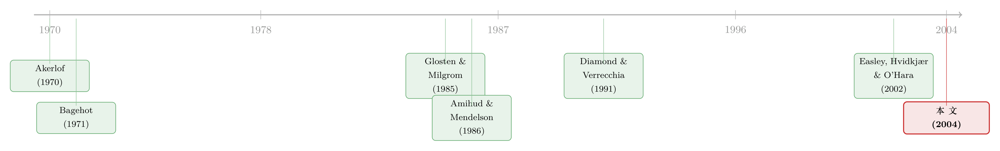

价差是真的，成本却是假的——逆向选择究竟从哪里抬高了「要求回报」
本文读的是 Gârleanu & Pedersen (2004, Review of Financial Studies)：由逆向选择产生的买卖价差，对交易者来说【平均而言不是成本】，因此它【不会直接】抬高资产的要求回报；逆向选择真正抬高要求回报的渠道，是它造成的【配置无效率（allocation cost）】。一句话——价差是真实存在的，但「价差等于成本」这条链条，断了一环。
1 引言：一个看似无懈可击的「常识」
做资产定价的人，心里大都装着一条几乎不需要论证的链条：流动性差的资产，要求回报更高。这条链条最经典的表述来自 Amihud and Mendelson (1986)——交易是有成本的，而一笔资产的价格，会被它【未来所有交易成本的现值】压低；换句话说，每期的交易成本会原封不动地加进要求回报里。而在大量实证里，买卖价差 (bid-ask spread) 正是那个被反复拿来代理「交易成本」的变量（关于把价差当成本来量、并发现它确实定价了收益，可参见《想买走一家公司千分之一的股票，得把价格推高百分之一》）。
可问题是，买卖价差从哪里来？
微观结构理论给过一个漂亮的答案：它来自【逆向选择】。Glosten and Milgrom (1985) 和 Kyle (1985) 告诉我们，做市商面对的卖单里，可能藏着掌握坏消息的知情交易者，于是他报一个偏低的买价来自我保护；买单里可能藏着好消息，于是他报一个偏高的卖价。价差，就是这两层自我保护叠出来的。
于是一条三段论自然成形：逆向选择 → 价差 → 成本 → 更高的要求回报。
这篇论文做的事，就是把这条三段论拆开，盯着中间那一环问：价差，对真正去交易的人来说，真的是一笔成本吗？
2 价差从哪里来：柠檬折价与桃子溢价
先把价差的来历讲透，因为后面的反转全压在它身上。
设想一个市场里，挂着限价单 (limit order) 的是不知情的人，而打出市价单 (market order) 的，可能是知情者、也可能是被流动性需求逼着交易的人。一笔【卖出】的市价单，对其他人来说是个坏信号——它可能源于卖方掌握了关于资产价值的坏消息。所以接盘者只肯出一个打了折的买价，这个折扣就是 Bagehot (1971) 以来人们熟知的「柠檬折价」(lemons discount)：\(m-\hat{x}>0\)，其中 \(m=E(x)\) 是无条件的预期股息，\(\hat{x}\) 是「在有人卖出的条件下」对下期股息的预期。
对称地，一笔【买入】的市价单是个好信号，于是卖价被抬高一个「桃子溢价」(peach premium)：\(\check{x}-m>0\)，\(\check{x}\) 是「在有人买入的条件下」对下期股息的预期。
两者之和，就是买卖价差：
$$\text{spread} = \delta(\check{x} - \hat{x}) > 0.$$
到这里，一切都和教科书一致。价差是正的，逆向选择越严重，\(\hat{x}\) 越低、\(\check{x}\) 越高，价差越宽。
3 真正关键的一步：价差对交易者「不是成本」
接着，一个自然的问题是：一个【既可能为流动性、也可能为信息而交易】的人，他一生中被价差吃掉的钱，期望值是多少？
这正是本文与 Glosten-Milgrom、Kyle 分道扬镳的地方。在那些经典模型里，藏着一类「深口袋」的无限流动性交易者——他们永远不会在未来某个糟糕的市场里被迫平仓，因此对他们而言要求回报恒等于无风险利率，未来的逆向选择根本无从定价。本文把这类深口袋的人【删掉】：每一个人都有限的耐心、都可能在将来某天因为现金、对冲、再平衡、税务、代理约束等等被迫卖出。正是这个删除动作，逼出了下面的结论。
考虑一个买入资产的人，将来他可能要把它卖掉。把那一刻拆成两种情形：
- 如果他是【因为缺钱而卖】（\(s<0\)），他会吃下柠檬折价——被付得太少；
- 如果他是【因为坏消息而卖】（\(s\ge 0\) 的信息驱动），他反而被付得太多——因为市场以为这只是一笔普通的流动性抛售，给的价钱高于这只「柠檬」该有的价。
这就是全文的灵魂：卖方拿到柠檬折价，但他卖的【确实是】一只柠檬；买方付出桃子溢价，但他买到的【确实是】一只桃子。 一次吃亏、一次占便宜，在均衡里，期望净值正好抵消为零。
于是，未来逆向选择带来的净交易损失，期望值是 0。未来的柠檬折价不会通过「现值」的方式压低今天的价格——这与 Amihud and Mendelson (1986) 截然不同：那里的交易成本是【无论如何都要付】的外生支出，所以必须被资本化进价格；而这里的价差是【信息相关】的，盈亏自negate。
价差不是成本，这是反直觉的一半。那另一半是：成本去哪了？
4 反转：成本藏在「该交易却没交易」里
价差不直接定价，并不意味着逆向选择无害。它真正的代价，是【配置无效率】——本该发生的交易没发生，不该发生的交易发生了。
最干净的例子：一个持有人急需现金，本应卖出，但他偏偏同时掌握了关于股息的【大好消息】，于是他（理性地）选择不卖。资产滞留在一个本不该长期持有它的人手里，这就是一笔配置成本。反过来，一个对资产有特殊需求、本该持有的人，却因为掌握了坏消息而卖掉了它，同样是错配。
本文证明：资产价格被【未来所有净配置成本的现值】压低；等价地说，要求回报被【每期的相对配置成本】抬高。注意这句话的措辞——抬高要求回报的，是配置成本，不是价差。
这个结论和实证对得上。Easley, Hvidkjær and O'Hara (2002) 发现，横截面上的收益差异能被【知情交易概率 (PIN)】解释，却不能被买卖价差解释。本文给了这一经验事实一个干净的理论落点：定价的是信息不对称导致的配置扭曲，而不是它表面上撑开的那道价差。（在另一个方向上，逆向选择体现在价差里、又反过来预言了公司的信用质量，可参见《评级藏在买卖价差里：当股票的「逆向选择」预言了公司的信用》。）
5 模型：把这两句话一步步算出来
本文是一篇理论论文，上面两段直觉，全都来自一个可以显式求解的均衡。值得把它拆开看。
设定。 有 \(N=\{1,\dots,N\}\) 个【风险中性】的同质个体，在 \(t=0,1,\dots,T\) 各期交易。资产共 \(K\) 股（\(K\ge 2\)，\(N-K\ge 2\)），每人持有 1 股或 0 股——刻意抽掉了「持有多少」的数量决策。每期时序如下：先给持有者派股息；然后随机选中一个人 \(I(t)\)，让他获得两个私人信号 \(x_{t+1}\)（关于下期股息）与 \(s_{t+1}\)（流动性冲击）。被选中者本期持有资产的效用是
$$x_{t+1} + s_{t+1}.$$
\(s_{t+1}<0\) 代表他比别人更不想持有（缺现金、融资成本高），\(s_{t+1}>0\) 则相反。\((x,s)\) 的分布是公共知识、跨期 i.i.d.，且 \(s\) 有对数凹密度。
价值函数。 用动态规划，唯一的状态变量是「是否持有」。记派息之后、信息到达之前，持有者的延续价值为 \(S_t\)、非持有者为 \(B_t\)。
报价与门槛。 不知情的非持有者按保留价值挂限价买单（Bertrand 竞争下），得到买价
$$bid_t = \delta\,(\hat{x} + S_{t+1} - B_{t+1}),$$
其中 \(\hat{x}=E(x_{t+1}\mid \text{sale})\)。一个知情持有者只有在卖出比留着更划算时才卖，化简后得到一个极简洁的门槛：
$$x_{t+1} + s_{t+1} \le \hat{x}.$$
也就是说——当且仅当他的股息消息坏到一定程度（坏到压过了流动性需求），他才卖。 均衡要求非持有者的预期与持有者的行为自洽：
$$\hat{x} = E\!\left(x_{t+1}\,\middle|\, x_{t+1} + s_{t+1} \le \hat{x}\right).$$
对称地，不知情持有者挂限价卖单于卖价 \(ask_t=\delta(\check{x}+S_{t+1}-B_{t+1})\)，知情非持有者当 \(x_{t+1}+s_{t+1}\ge\check{x}\) 时买入，且
$$\check{x} = E\!\left(x_{t+1}\,\middle|\, x_{t+1} + s_{t+1} \ge \check{x}\right).$$
可以证明 \(\check{x}\ge m \ge \hat{x}\)：卖单条件下的预期股息低于均值（柠檬），买单条件下高于均值（桃子）。
核心方程。 解出均衡后，持有资产的价值是这样一个分解——这也是全文最该被盯住的一个式子：
其中三块的具体形式为
$$s^+ = \tfrac{1}{N}\,E\!\left(s_t\,\mathbf{1}_{(s_t>0)}\right),$$
$$\hat{c} = \tfrac{1}{N}\,E\!\left(s_t\,\mathbf{1}_{(s_t>0,\;x_t+s_t\le \hat{x})} - s_t\,\mathbf{1}_{(s_t<0,\;x_t+s_t> \hat{x})}\right).$$
\(\hat{c}\) 这一项正是「配置成本」的数学身体：第一块是「本想持有却被迫错过」（\(s_t>0\) 想留，但因坏消息 \(x_t+s_t\le\hat{x}\) 而卖了），第二块是「本该卖却留下」（\(s_t<0\) 想卖，但因好消息 \(x_t+s_t>\hat{x}\) 而没卖）。注意系数 \(1/N\) 就是某个特定持有者本期遭遇流动性冲击的概率；这意味着只要遭遇冲击的【比例】不变，配置成本的效应不会随市场规模 \(N\) 变大而消失。
把价格算出来——反转的算术证据。 把 \(S_{t+1}-B_{t+1}=\sum_{s=t+2}^{T}\delta^{s-t-1}(m-\hat{c}+\check{c})\) 代回 \(bid_t\) 的定义，整理可得
$$bid_t = -\,\delta\,(m-\hat{x}) + \sum_{s=t+1}^{T}\delta^{s-t} m - \sum_{s=t+2}^{T}\delta^{s-t}(\hat{c}-\check{c}).$$
请看这个式子的结构：柠檬折价 \(-\delta(m-\hat{x})\) 只出现【一次】（当期那笔交易），而配置成本 \((\hat{c}-\check{c})\) 却是从 \(t+2\) 一路加到 \(T\) 的【一整串现值】。 这就是第 3、第 4 节那两句话的全部算术来源——未来的价差不会被逐期资本化进价格，未来的配置无效率才会。对照之下，无逆向选择的全信息价格是 \(\sum_{s=t+1}^{T}\delta^{s-t} m\)，干净得多。
对称基准（Proposition 3）。 如果 \(x\) 围绕 \(m\)、\(s\) 围绕 \(0\) 对称分布，则 \(\hat{c}=\check{c}\) 且 \(m-\hat{x}=\check{x}-m\)。此时中间价（\(\tfrac12 bid+\tfrac12 ask\)）恰好等于全信息价格，期望回报恰好等于无风险利率 \(r=1/\delta-1\)——同时却存在一个严格为正的买卖价差。 一个正价差与一个零超额回报并存：这大概是全文最精炼的一张「反直觉名片」。
别误读 Proposition 3：它不是说逆向选择无害，而是说在【完全对称】这个特殊基准下，买、卖两侧的配置成本互相抵消（\(\hat{c}=\check{c}\)）。一旦分布不对称，要求回报就会被净配置成本 \(\sum_{s}\delta^{s-t}(\hat{c}-\check{c})\) 推动，符号取决于 \((x,s)\) 的分布。
本文还做了三个扩展来检验稳健性：(i) 投资者在「变成知情者」或「产生流动性需求」的概率上有差异；(ii) 同时存在固定成本与信息成本；(iii) 风险厌恶。后两个扩展里主结论不变；而在第一个扩展里出现了一个重要的补充——当边际投资者比最知情的人更不可能凭信息交易时，他在交易中【平均会净亏】，这部分预期损失会额外抬高要求回报，但除非边际投资者纯粹为流动性而交易，否则这块损失【小于】买卖价差。换句话说，即便价差最终重新进入了定价，进入的也只是它的一个零头。
6 文献脉络
把这条线索拉直来看，它的源头是 Akerlof (1970)：旧车市场里的「柠檬问题」第一次把逆向选择写成经济学。接着，Bagehot (1971) 把这套逻辑搬进交易大厅，提出了知情者与流动性交易者博弈的雏形；Glosten and Milgrom (1985) 与 Kyle (1985) 则把它做成了严谨的微观结构模型，给出了买卖价差的生成机制。

然后，一个自然的问题是：这些价差如何进入【资产价格】？Amihud and Mendelson (1986) 给出了影响至今的答案——把交易成本当作外生支出资本化进价格，由此 Constantinides (1986)、Vayanos (1998)、Vayanos and Vila (1999) 把它推广到动态与一般均衡。但这一支默认了「价差=成本」。
与此同时，另一支文献关注逆向选择带来的【配置无效率】：Ausubel (1990) 与 Eisfeldt (2004) 研究它如何扭曲实物投资，Diamond and Verrecchia (1991)、Wang (1993)、Easley and O'Hara (2000) 则发现信息不对称导致不完全的风险分担、压低价格。本文站在这两支的交叉口上：它接受「逆向选择压低价格」，但用一个可显式求解的设定指出——压低价格的是【未来配置无效率】，而非价差本身。最后，Easley, Hvidkjær and O'Hara (2002) 的「PIN 被定价、价差不被定价」实证，恰好成了它的经验注脚。（这条把流动性写进价格的线，在场外市场里有另一种讲法，可参见《价格里那道折扣，量的是「找不到买家」的时间》。）
7 评论与延伸（Q&A + 研究方向）
(a) 几个可能的疑问
Q：这篇说价差不是成本，Amihud-Mendelson 说价差是成本，到底谁错了？
都没错，差别在价差的【来源】。Amihud-Mendelson 处理的是【外生】交易成本（佣金、手续费一类），无论你为什么交易都得付，所以它被资本化、抬高要求回报。本文处理的是【内生于逆向选择】的价差，它对交易者是一次吃亏一次占便宜、期望净值为零。把同一个经验代理变量（价差）套到两种本质不同的成本上，正是这条文献长期的混淆所在。
Q：「价差不是成本」会不会只是风险中性 + 每人 1 股这种极端假设的产物？
风险中性确实让叙述更干净，但本文的三个扩展（风险厌恶、固定成本、异质投资者）显示主结论——逆向选择通过配置成本而非价差定价——是稳健的。「每人 0/1 股」是真正的强假设（抽掉了数量决策），作者也承认这是一处 major restriction，只是论证直觉可推广。
Q：那 Easley-Hvidkjær-O'Hara 的 PIN 结果，是不是就被这篇「解释掉」了？
方向一致，但本文是理论、对方是实证，谈不上谁解释谁。本文的价值在于给「PIN 定价、价差不定价」提供了一个机制：定价的是信息不对称引起的配置扭曲，而配置扭曲与知情交易概率同源，与价差宽度并不直接挂钩。
Q：删掉「深口袋」交易者真有那么关键吗？
是全文的支点。在 Glosten-Milgrom / Kyle 里，无限流动性的交易者永不被迫在坏市场里平仓，于是未来的逆向选择对他无意义，要求回报退化为无风险利率。一旦人人都可能在将来被迫卖出，「未来要在逆向选择的市场里脱手」才成为一件需要定价的事——而本文证明，需要定价的那部分，是配置成本。
Q：既然对称分布下超额回报为零，是不是说现实中逆向选择对收益的净影响很小？
不能这么推。对称只是一个让 \(\hat{c}=\check{c}\) 的基准。现实里股息与流动性冲击的分布几乎不可能对称，净配置成本 \(\sum_s\delta^{s-t}(\hat{c}-\check{c})\) 一般非零；而且异质投资者扩展里还有边际投资者的净交易损失。论文给的是「价差不是那个渠道」，而不是「逆向选择不影响收益」。
Q：模型里价差是正的、超额回报却可能为零，这在数据里怎么检验？
关键是把「价差」与「配置无效率/PIN」分开度量后【同时】放进横截面回归，看在控制配置代理之后价差的系数是否塌掉。EHO (2002) 已经给了支持性的证据，但用更细的成交数据、把流动性冲击与信息冲击分离，仍是可做的活。
(b) 几个可能的研究问题与提案
-
把这套机制搬到公司债市场。 【经济故事】公司债是典型的场外、低频、逆向选择严重的市场，且持有人（保险公司、债基）常因负债端冲击被迫卖出——恰好是本文「无深口袋」假设的现实版。能否证明：信用利差里被定价的，是配置无效率而非交易成本本身？ 【可行性】中。TRACE 成交数据 + 持有人层面的被迫卖出（如评级下调触发的抛售）可识别「流动性驱动」与「信息驱动」交易；难点是把两类交易干净地分开。
-
「被迫卖出概率」的横截面定价。 【经济故事】本文的核心状态变量是「将来可能在坏市场里被迫脱手」。若能为每只资产构造一个「持有人被迫卖出概率」的代理，它应当比价差更好地解释要求回报。 【可行性】中高。机构持仓（13F）、债基赎回压力、保险公司资本约束都可用来构造该代理；识别策略可借用持有人冲击作为外生变动。
-
外资持有人与逆向选择的配置成本。 【经济故事】外资常被认为信息劣势、且更易因母国冲击被迫平仓。按本文逻辑，外资比例高的资产，配置无效率（而非价差）应更高，要求回报随之抬升。 【可行性】中。跨国持仓数据可得，但「外资是否信息劣势」本身存争议，需要小心识别（可借汇率/资本管制冲击）。
-
对称性检验：什么时候价差真的「白挣」？ 【经济故事】Proposition 3 给了一个可证伪的极端——分布对称时正价差对应零超额回报。能否在某些高度对称的市场（如做市充分的大盘 ETF）里，找到「价差宽、超额回报却近零」的横截面证据？ 【可行性】高。数据现成（价差、收益都易得），难在论证某子样本确实接近模型的对称基准。
8 我的判断
这篇论文的贡献，是在一片「价差即成本」的共识里，用一个能显式求解的小模型，把因果链精准地剪断又重新接好：价差是逆向选择的【症状】，但抬高要求回报的【病灶】是配置无效率。它对 EHO (2002) 那条「PIN 而非价差」的实证给了恰到好处的理论支撑，也提醒所有把价差当流动性代理的实证工作者——你以为在度量成本，可能只是在度量一个会自我抵消的会计科目。
对识别的担忧主要在两处。其一，「每人 0/1 股、风险中性」这类设定虽便于求解，却把数量与组合维度整个抽掉了；扩展虽证稳健，但现实中流动性冲击与信息冲击高度纠缠、且常常【正相关】（坏消息往往伴随融资压力），一旦两者相关，「一次吃亏一次占便宜恰好抵消」的对称就会被打破，净配置成本的符号与大小都需要重新算。其二，全文是均衡存在性与比较静态层面的刻画，缺一个把 \(\hat{c}-\check{c}\) 映射到可观测利差的桥梁。
后续我最想看到的，是把这套「配置成本而非价差」的逻辑【拿到公司债或场外市场里做一次实证对账】：在控制了被迫卖出概率/配置无效率的代理之后，买卖价差对信用利差的解释力是否真的塌掉？如果塌了，那将是对这篇二十年前的理论最有力的一次迟到验证。
参考文献
Akerlof, G. A. (1970). The Market for "Lemons": Quality Uncertainty and the Market Mechanism. Quarterly Journal of Economics 84(3), 488–500.
Amihud, Y., and H. Mendelson (1986). Asset Pricing and the Bid-Ask Spread. Journal of Financial Economics 17(2), 223–249.
Ausubel, L. M. (1990). Insider Trading in a Rational Expectations Economy. American Economic Review 80(5), 1022–1041.
Bagehot, W. (1971). The Only Game in Town. Financial Analysts Journal 27(2), 12–14.
Constantinides, G. M. (1986). Capital Market Equilibrium with Transaction Costs. Journal of Political Economy 94(4), 842–862.
Diamond, D. W., and R. E. Verrecchia (1991). Disclosure, Liquidity, and the Cost of Capital. Journal of Finance 46(4), 1325–1359.
Easley, D., S. Hvidkjær, and M. O'Hara (2002). Is Information Risk a Determinant of Asset Returns? Journal of Finance 57(5), 2185–2221.
Eisfeldt, A. L. (2004). Endogenous Liquidity in Asset Markets. Journal of Finance 59(1), 1–30.
Gârleanu, N., and L. H. Pedersen (2004). Adverse Selection and the Required Return. Review of Financial Studies 17(3), 643–665.
Glosten, L. R., and P. R. Milgrom (1985). Bid, Ask and Transaction Prices in a Specialist Market with Heterogeneously Informed Traders. Journal of Financial Economics 14(1), 71–100.
Kyle, A. S. (1985). Continuous Auctions and Insider Trading. Econometrica 53(6), 1315–1335.
Vayanos, D. (1998). Transaction Costs and Asset Prices: A Dynamic Equilibrium Model. Review of Financial Studies 11(1), 1–58.
Wang, J. (1993). A Model of Intertemporal Asset Prices Under Asymmetric Information. Review of Economic Studies 60(2), 249–282.